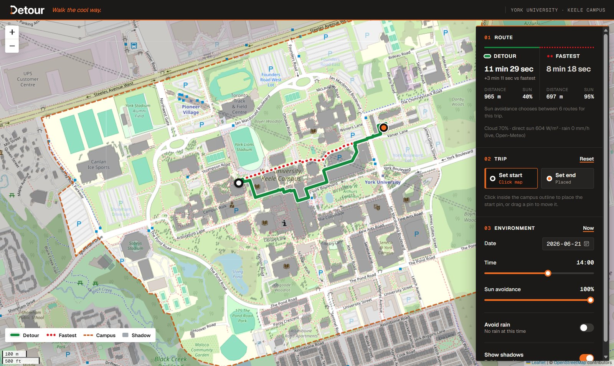

The real app on 21 June 2026 at 14:00, with live weather and shadows shown. Green = Detour route (100 % sun avoidance: 40 % sun for 3 min 11 s more), red dots = fastest route (95 % sun), orange dashes = campus boundary.
main (18 Oct 2026). Every number in this guide was produced by running the actual code, unless marked otherwise. Frontend: Next.js 16.4.2, React 19.3, Leaflet 1.9 / react-leaflet 5. Backend: Python 3.14, FastAPI 0.143, OSMnx 2.1, Shapely 2.2, pvlib 0.16.sun_avoidance=50); the backend divides by 100 and works with 0.5.sun_percent) is already a percentage when it leaves the backend (e.g. 95.1), not a fraction.0.7) and the UI multiplies it by 100 to show "Cloud 70 %".The frontend and Leaflet use [latitude, longitude]. GeoJSON uses [longitude, latitude]. The backend computes in metres (UTM zone 17N: x = east, y = north). See §4.4.
Detour finds walking routes across York University's Keele Campus that keep you out of the direct sun (and, optionally, out of the rain), and shows how much extra walking that costs.
Normal navigation apps minimise time or distance. On a hot day, the fastest route can be in full sun while a route that is only a minute longer runs along the shady side of buildings and trees. Detour answers: "How much sun can I avoid, and what does it cost me in time?"
| Layer | Technology | What we use it for |
|---|---|---|
| UI framework | Next.js 16.4.2 (App Router), React 19.3 | Page shell, components, state, fonts, static build |
| Language | TypeScript 5 | Type-checked frontend code; API response types |
| Map | Leaflet 1.9 + react-leaflet 5 | Interactive map, pins, routes, shadow polygons |
| Styling | Tailwind CSS 4 + globals.css | Layout, panel, Leaflet overrides |
| API server | FastAPI 0.143 + Uvicorn | HTTP endpoints, parameter validation, JSON |
| Map data | OSMnx 2.1 (OpenStreetMap), City of Toronto 3D Massing 2025 | Walk network, campus boundary, trees; building footprints and heights |
| Geometry | Shapely 2.2, GeoPandas 1.2, pyproj 3.8 | Shadow polygons, spatial index, coordinate conversion |
| Graph | NetworkX 3.7 (data structure) + our own A* / Pareto search | Routing |
| Astronomy | pvlib 0.16 (NREL Solar Position Algorithm) | Sun elevation and azimuth |
| Weather | Open-Meteo (free, no API key) via httpx | Direct sunlight, cloud cover, precipitation |
| Checks | ESLint; next build (TypeScript) | Lint and type-checked build (test files removed, §14) |
| Hosting | Vercel (frontend), Render (backend, render.yaml) | Deploy on every push to main |
src/
app/layout.tsx root HTML, fonts, CSS
app/page.tsx header + map region
app/globals.css all styling
components/
CampusMapLoader.tsx client-only
CampusMap.tsx map + state
PanelControls.tsx UI pieces
lib/route.ts types, queries
scripts/ setup, dev, venv (.mjs)backend/
api.py endpoints, caches, snapping
router.py A*, Pareto options, pick()
exposure.py shade/shelter, S and W
shadow.py building + tree shadows
sun.py pvlib sun position
weather.py Open-Meteo client
data.py load OSM + Toronto data
cache/ data/The frontend is one page. Almost everything interesting happens in CampusMap.tsx; lib/route.ts holds the pure helpers.
| Concept | Plain-English meaning | Where in Detour |
|---|---|---|
| Next.js | A framework on top of React: file-based pages, a build system, fonts, images, server rendering. | src/app/: layout.tsx, page.tsx |
| React | A library where the UI is a function of data. You describe what the screen should look like for the current data; React updates the page. | Every .tsx component |
| TypeScript | JavaScript with types. Mistakes like passing a string where a number is expected fail at build time. | RouteResponse, LatLon, Scenario types |
| Component | A function that returns UI. | CampusMap, Slider, Switch, RoutePair |
| Props | Inputs passed from a parent to a child component (read-only for the child). | <Slider label="Time" value={minutes} onChange={setMinutes} /> |
| State | Data a component remembers between renders. Changing it makes React re-render. | date, minutes, pins, toggles (§2.7) |
| useState | Hook that creates one piece of state and its setter. | const [date, setDate] = useState(...) |
| useEffect | Hook that runs side effects (timers, network) after render, with a cleanup function. | The fetch inside useRemote |
| Custom hook | Your own function that uses hooks, so logic can be reused. | useRemote() is used 3 times: route, shadows, campus |
| Controlled input | An input whose value comes from React state, and whose onChange updates that state. | Date input, both sliders, both switches |
| Re-render | React calls the component function again after state changes and updates only what differs. | Every slider move re-renders CampusMap |
| Event | A user action delivered to a handler function. | Map click, pin dragend, slider onChange, button onClick |
| SSR | Server-side rendering: HTML is produced before reaching the browser. | The header is prerendered as static HTML; the map is not (next row) |
| Dynamic import | Load a module only in the browser, later. | CampusMapLoader loads Leaflet with ssr: false |
layout.tsx and page.tsxlayout.tsx is the root of every page. It sets the page title "Detour | Walk the cool way.", the description and icon, loads the Geist fonts with next/font/google, and imports leaflet/dist/leaflet.css and globals.css. It renders <html><body>{children}</body></html>.
page.tsx is a server component (no "use client"). It renders the header (wordmark image via next/image, slogan, "York University · Keele Campus") and a <section> containing <CampusMapLoader />. The build output shows the route / as ○ (Static): prerendered once at build time.
CampusMapLoader.tsx: why the map is loaded dynamically"use client";
const CampusMap = dynamic(() => import("./CampusMap"), {
ssr: false,
loading: () => <div aria-label="Loading map" className="campus-map" />,
});Leaflet reads window and document as soon as it is imported. On the server those do not exist, so importing Leaflet during server rendering would crash. dynamic(..., {ssr:false}) means: render an empty placeholder on the server, then download and run CampusMap only in the browser. In Next.js 16 ssr:false is only allowed inside a client component, which is why this tiny wrapper file exists.
CampusMap.tsx: the main componentAbout 500 lines. It owns all the state, calls the backend through the useRemote hook, draws the Leaflet layers and renders the side panel (sections 01 Route, 02 Trip, 03 Environment).
PanelControls.tsxPresentation-only components; no routing logic.
Slider: a controlled <input type="range"> with a label and a formatted value. Its CSS variable --fill = (value − min)/(max − min) × 100 % colours the track.Switch: a controlled checkbox with role="switch" (accessible toggle).RoutePair / RouteSummary: Detour and Fastest side by side: time (fmtSpan: "1 min 19 sec"), distance (fmtDistance: "427 m" or "1.65 km"), sun %, and rain % only while it is raining. The delta line uses the backend's extra_seconds.lib/route.tsPure helpers with no React and no maths, kept apart from the components: the TypeScript types of the API, constants (campus centre [43.7735, -79.5019], map bounds, DEFAULT_AVOIDANCE = 50, AVOID_RAIN_W = 10, date range 1900–2100), nowInToronto(), routeQuery(), shadowQuery(), the validators parseRoute / parseShadows / parseCampus, the point-in-polygon test insideRing(), and getJson().
Toronto time. nowInToronto() uses Intl.DateTimeFormat with timeZone: "America/Toronto", so the default date and time are Toronto wall-clock time even if the judge's laptop is set to another time zone. For example: 18:07 UTC in June → 14:07 (EDT); 03:03 UTC on 15 Jan → 22:03 on 14 Jan (EST).
There are no weather or comfort files in the frontend. The frontend never calls Open-Meteo; it only displays the weather object that the backend includes in each /route response (§11). There is no Smart/Comfort mode in the code (§13).
| State (useState) | Starts as |
|---|---|
date | today in Toronto |
minutes (0–1439) | now in Toronto |
sunAvoidance (0–100) | 50 |
avoidRain | false |
start, end (LatLon | null) | null |
placing ("start"|"end") | "start" |
showShadows | false |
notice (off-campus message) | null |
inside each useRemote: loaded, error, attempt | null, null, 0 |
| Derived on every render (not state) |
|---|
the request path, e.g. /route?date=… |
r: the route to draw (only if both pins exist) |
stale: does the shown data belong to an older path? |
failed: the first error among route, shadows, campus |
| formatted times, distances, percentages |
Store the minimum; compute the rest. Because the request path is a plain string computed from state, "did anything change?" is just string comparison, and the same string is the React key for the map layers.
What happens between "the user moves a slider" and "the green line moves".
GET /route?date=2026-06-21&time=14:00&sun_avoidance=50&w_rain=0
&from_lat=43.7735&from_lon=-79.5019&to_lat=43.779&to_lon=-79.496routeQuery() sends the slider's 0–100 sun_avoidance as is, sends w_rain=10 when "Avoid rain" is on (else 0), and sends pins as separate lat/lon numbers. Shadows use a different, smaller query (shadowQuery: only date and time), because shadows do not depend on pins, sun avoidance or rain.
useRemotesrc/components/CampusMap.tsx
useEffect(() => {
if (!path) return; // null path = don't fetch (e.g. pins not placed)
const controller = new AbortController();
const timer = setTimeout(async () => { // debounce: wait 150 ms
try {
const value = parse(await getJson(path, controller.signal));
if (controller.signal.aborted) return;
setLoaded({ path, value }); // remember WHICH path this answer belongs to
setError(null);
} catch (e) {
if (controller.signal.aborted) return;
setError({ path, message: e instanceof Error ? e.message : String(e) });
}
}, 150);
return () => { clearTimeout(timer); controller.abort(); }; // cleanup
}, [path, parse, attempt]);Dragging the time slider from 14:00 to 14:20 changes state 20 times. Each change re-runs the effect, whose cleanup cancels the previous timer. Only when the slider rests for 150 ms does a request go out. Result: one request instead of twenty.
If a request is already in flight and the path changes, the cleanup calls controller.abort(). The browser cancels the HTTP request, and the aborted checks guarantee an old answer can never overwrite a newer one (no race condition).
stale = loaded.path !== path. While a new answer is loading, the old route stays on the map but is dimmed (lower opacity, Detour dashed "6 8") and the panel says "Updating...". The user never sees an empty map flash.
An error is stored with its path, so it only shows while it belongs to the current request. Retry bumps attempt, a dependency of the effect, which re-runs the fetch. After tonight's audit it retries only what failed, including the campus outline (§15).
getJson and parseRoutegetJson turns failures into human messages: network failure → "can't reach the backend at http://localhost:8000"; HTTP 422/404 → the backend's detail text (e.g. "start is outside York University's Keele Campus"); an abort is re-thrown untouched so the hook can ignore it.parseRoute checks that the JSON really has finite numbers for each route's seconds, distance, sun % and rain %, a geometry object, the extra seconds, the number of options and a known weather source: exactly the fields the UI uses. If not, it throws "unexpected /route response", which is shown as an error instead of crashing the page during rendering. isNum rejects NaN and Infinity."What happens if the backend is asleep?" The free Render plan sleeps after 15 min; the first request waits about a minute while it wakes. If a request fails, the panel shows the error and a Retry button. The map, pins and controls keep working.
A free, community-made map database of the world. We use it twice: (1) the background tile images from tile.openstreetmap.org, and (2) the data the backend downloaded once with OSMnx: footpaths, the campus boundary (OSM way 15396822) and tree locations.
A JavaScript library that displays an interactive map in the browser: panning, zooming, tiles, markers, lines and polygons. react-leaflet wraps Leaflet so each map layer is a React component.
| Component | Our settings |
|---|---|
MapContainer | centre [43.7735, -79.5019], zoom 16, minZoom 15, maxBounds = campus box [[43.764,-79.525],[43.785,-79.488]] with viscosity 1 (cannot pan away), scroll-wheel zoom |
TileLayer | OSM tiles + required attribution "© OpenStreetMap contributors" |
Pane | Custom drawing layers with a z-index (stacking order), see Figure 4 |
Polygon | Grey "outside campus" mask (a big box with the campus cut out as a hole) + orange dashed campus outline |
GeoJSON | Routes (LineStrings) and shadows (one MultiPolygon), straight from the backend |
Polyline | Short dotted "connector" lines from each pin to where the route starts/ends on the path network |
Marker | Start and end pins: custom divIcon, draggable, with a Tooltip |
useMapEvents | Map click → place the next pin (ClickToPlace) |
ZoomControl, ScaleControl | +/− buttons top-left, scale bar bottom-left |
Each route is drawn twice: first a wider white line (the "casing"), then the coloured line on top, so the route stands out over any map colour. Order: fastest casing (white, 8.5 px) → fastest (red #e0161b, 5 px, dotted "1 9") → Detour casing (white, 11 px) → Detour (green #138a3e, 7 px). Detour is drawn last, so it is the "hero" line on top.
keyreact-leaflet's <GeoJSON> ignores later changes to its data prop. Each layer's key includes the request path (e.g. key={`ctx-${route.path}`}), so when a new answer arrives React throws the old layer away and creates a new one. Style changes such as stale dimming are still applied through the style prop.
The shadow request path is null while "Show shadows" is off, so nothing is fetched. When on, the backend sends one MultiPolygon of overlapping pieces (≈1.45 MB at midday); Leaflet draws it with fillRule: "nonzero", which fills overlapping pieces once, so it looks exactly like the merged shadow without the backend having to merge thousands of polygons.
Pins can only be placed inside the campus polygon. The frontend checks with insideRing() (ray casting: count how many polygon edges a horizontal ray from the point crosses; odd = inside). A pin dragged outside is put back where it was, and a message appears. The backend checks the same polygon again (it never trusts the client) and answers 422 for an off-campus pin. Any pin inside the campus is accepted, however far it is from a path: it snaps to the nearest walkway node and a dotted line joins it to the route.
Where the swaps happen in code: parseCampus maps ([lon, lat]) => [lat, lon]; lineEnds reads [a[1], a[0]]; the Leaflet GeoJSON component reads [lon, lat] itself; the backend's pyproj transformers use always_xy=True (x = longitude first). origin/destination in the response are [lat, lon]. During development a test checked that the first route coordinate has -80 < lon < -79 and 43 < lat < 44.
FastAPI turns Python functions into HTTP endpoints. The function's parameters become query parameters, and their types and limits are validated automatically: sun_avoidance: float = Query(50.0, ge=0, le=100) means a request with sun_avoidance=101 is rejected with HTTP 422 before our code runs. Response models (RouteResponse, Pydantic) guarantee the JSON shape. FastAPI also generates interactive docs at /docs.
| Endpoint | Parameters | Returns |
|---|---|---|
GET /route | date (1900-01-01..2100-12-31), time (HH:MM Toronto), sun_avoidance 0–100 (default 50), w_rain 0–50 (default 0), from_lat/from_lon/to_lat/to_lon (optional, default = demo trip), hidden clear_sky | Both routes (time, distance, sun %, sun-seconds, rain %, GeoJSON line), sun position, weather, route_options, extra_seconds, changes in sun/rain % |
GET /shadows | date, time | GeoJSON FeatureCollection with one MultiPolygon (empty at night) |
GET /campus | none | GeoJSON Feature: the campus boundary polygon |
GET/HEAD /health | none | {"status":"ok","edges":5172,"buildings":737} (HEAD added for UptimeRobot) |
GET /docs | none | Auto-generated interactive API docs |
Error codes: 422 for invalid input (bad time, out-of-range date, pin outside campus, only one of lat/lon). A 404 (no route) cannot happen for pins on campus, because the walk graph is one strongly connected component. CORS allows localhost:3000 plus the sites in the ALLOWED_ORIGINS environment variable; only GET is allowed.
lifespan function)load_campus() reads the cached files in backend/cache/ (no internet needed): the walk graph, 737 building footprints with heights, 1,181 trees and the campus polygon. (If the cache were missing it would download from OSM via Overpass, rotating 3 mirror servers with exponential back-off.)ExposureModel: places 121,632 sample points every 1.5 m along all edges, indexes them in an STRtree, and computes each edge's rain shelter fraction. This is done once.Uvicorn only opens the port after this finishes, which is why the frontend can briefly report "can't reach the backend" during start-up (then Retry).
| Cache | Key | Bound | Why |
|---|---|---|---|
| Campus data, edge table, sample points, shelter | — | loaded once | Never changes while running |
| Exposure model per day | (date, clear_sky) | cleared above 32 | Sun schedule for a date; rebuilt when the weather refreshes |
| Route options | (model, origin, dest, time, w_rain) | cleared above 64 | Moving only the avoidance slider re-picks from cached options |
| Shade fractions f | 15-min slice | 192 slices | Shadows change slowly; shared by all models |
/shadows response bodies | 15-min slice | 64 (was 192) | Each midday body ≈ 1.45 MB; see §15 |
| Spatial index of the graph nodes | — | built once | Snaps a pin to its nearest node in microseconds |
| Weather per date | date | 30 min (60 s after a failure) | Respect the free API, keep requests fast |
| Data | Source | Numbers |
|---|---|---|
| Walk network | OSM via OSMnx, network_type="walk", campus + 100 m buffer, projected to UTM 17N | 1,804 nodes, 5,172 directed edges |
| Campus boundary | OSM way 15396822 "York University, Keele Campus" | one polygon |
| Buildings | City of Toronto 3D Massing 2025 (packaged in backend/data/), height = MAX_HEIGHT | 737 footprints, tallest 61.5 m |
| Trees | OSM natural=tree points within 300 m of campus | 1,181 trees |
A map of walkways is a graph. Routing is "find the best path through a graph".
| Term | Meaning in Detour |
|---|---|
| Vertex (node) v ∈ V | A point where walkways meet or end. Has metric coordinates x, y. |V| = 1,804. |
| Edge e = (u, v) ∈ E | A walkway segment from u to v, with a length in metres and its exact curved geometry. |E| = 5,172. |
| Directed | Each walkway is stored in both directions (u→v and v→u), because shade is computed per edge entered at a time. |
| Multigraph | Two nodes may be joined by several different walkways (key 0, 1, …). NetworkX MultiDiGraph. |
| Path P | A sequence of edges e1, e2, …, ek where each ends where the next begins. |
| Weight / cost | A number per edge; the cost of a path is the sum of its edge costs. |
| Shortest path | The path from origin to destination with the smallest total cost. |
OSM stores degrees. One degree of longitude at Toronto is only about 80 km, but one degree of latitude is about 111 km, so distances in degrees are distorted. Projecting to UTM zone 17N (EPSG:32617) makes x and y true metres, so length, straight-line distance and shadow offsets are all directly in metres.
A clicked point is usually not exactly on a node. _snap() in api.py converts the point to metres, checks it is on campus, and finds the closest node with a Shapely STRtree built once at start-up, however far away that node is. The walk graph is one strongly connected component (every node can reach every other), so any two pins always have a route. The dotted connector lines on the map show the gap between a pin and the node its route starts from.
| Symbol | Meaning | Unit | Value in the app |
|---|---|---|---|
| τe = de / v | time to walk edge e (length de, speed v) | seconds | v = 1.4 m/s |
| Se(t) | sun exposure on e if entered at time t (§10) | sun-seconds | second criterion (§7.4) |
| We(t) | rain exposure on e if entered at time t (§12) | rain-seconds | computed |
| wr | seconds of walking traded per rain-second | s / rain-s | 0, or 10 with "Avoid rain" |
Both terms are in seconds, so the weight has a plain meaning: "how many seconds of extra walking would I accept to avoid one second out in moderate rain?" Sun has no weight in the cost: adding ws·Se is the obvious idea, but §7.4 shows why Detour treats sun as a second criterion instead, and §7.6 works through what a sun weight would do.
Keep a priority queue (a heap) of nodes ordered by the best known cost from the origin. Repeatedly take the cheapest node, mark it settled, and try every outgoing edge: if going through it is cheaper than what a neighbour had, update the neighbour. When the destination is settled, follow the "came from" links backwards to get the path. With non-negative edge costs, the first time a node is settled its cost is optimal.
A* orders the heap by cost so far + h(n), where h(n) is a lower bound on the remaining cost. Detour uses straight-line walking time:
Time-dependence: S and W depend on the time you enter an edge, so each search label carries its arrival time. Settling by accumulated cost is exact only if arriving earlier never makes the rest of the walk costlier; over a walk of minutes the sun barely moves, so the error is negligible (documented assumption).
A single weight time + ws·sun only finds routes on the convex hull of the time-vs-sun trade-off, so the route "jumps" as the weight changes and some good compromises are never chosen. So Detour has no sun weight. Instead shade_options() finds the Pareto set: every route that no other route beats on both time and sun.
MAX_DETOUR = 0.5): options may cost at most 50 % more than the quickest.SUN_STEP = 0.02): each new option must cut sun by at least 2 % of the quickest route's sun (and at least 1 sun-second), so near-identical routes aren't counted.pick()backend/router.py
def pick(options, avoidance): # avoidance = sun_avoidance / 100, so 0..1
most, least = options[0].sun_seconds, options[-1].sun_seconds
target = most - avoidance * (most - least)
return next(r for r in options if r.sun_seconds <= target + 1e-9)Sun avoidance p means "avoid at least p of the sun that can be avoided on this trip". 0 % = fastest, 100 % = shadiest option. Options are already sorted quickest-first, so the first one that meets the target is the quickest that does.
Sun at 13:15 on 21 June: elevation 69.6°, azimuth 176.8°; clear-sky intensity I = sin 69.6° = 0.938. The middle detour edge is 59.7 % shaded.
| Edge | Length | τ = d / 1.4 | shade f | S = τ · I · (1 − f) |
|---|---|---|---|---|
| A→B | 100 m | 71.43 s | 0 | 66.97 |
| A→C1 | 10 m | 7.14 s | 0 | 6.70 |
| C1→C2 | 100 m | 71.43 s | 0.597 | 26.99 |
| C2→B | 10 m | 7.14 s | 0 | 6.70 |
Left: the two routes. Right: what a single sun weight would choose, with cost = T + ws·S.
| Route | Time T | Sun S | Sun % |
|---|---|---|---|
| Direct A→B | 71.4 s | 66.97 | 100 % |
| Detour A→C1→C2→B | 85.7 s | 40.38 | 50.2 % |
| ws | Direct cost | Detour cost | Winner |
|---|---|---|---|
| 0.5 | 71.4 + 33.5 = 104.9 | 85.7 + 20.2 = 105.9 | Direct |
| 1 | 71.4 + 67.0 = 138.4 | 85.7 + 40.4 = 126.1 | Detour |
Interpretation: the detour costs 14.3 s more and avoids 26.6 sun-seconds. It is worth it only if you value a sun-second at more than 14.3 / 26.6 ≈ 0.54 s of walking. With the slider, the Pareto set here has 2 options, so any avoidance above 0 % picks the detour.
Sfastest = 961.3, Sshadiest = 690.5 (sun-seconds). Target = 961.3 − 0.5 × 270.8 = 825.9. The quickest option with S ≤ 825.9 has S = 797.1, T = 1,225.7 s vs 1,177.7 s fastest: +48 s of walking, sun 88.5 % → 70.6 %.
| Quantity | Definition (backend convention) |
|---|---|
| Elevation θ | Angle of the sun above the horizon. 0° = on the horizon, 90° = straight overhead. |
| Azimuth α | Compass direction of the sun, degrees clockwise from north: 90° = east, 180° = south, 270° = west. |
| Daylight | is_up: elevation > 0°. |
Computed with pvlib (NREL's Solar Position Algorithm) for the campus centre (43.7735° N, 79.5019° W), using apparent elevation (includes atmospheric refraction). For speed, SunSchedule computes all 1,441 minutes of a day once (00:00…24:00) and then just looks values up.
| Date and time (Toronto) | Elevation | Azimuth | Comment |
|---|---|---|---|
| 21 June, 09:00 | 33.8° | 88.7° | morning sun from the east |
| 21 June, 13:15 | 69.6° | 176.8° | near solar noon (EDT shifts noon past 13:00) |
| 21 June, 18:00 | 30.1° | 274.7° | evening sun from the west |
| 20 March, 13:20 | 46.3° | 178.1° | equinox: 90° − latitude ≈ 46.2° |
| 21 December, 12:15 | 22.8° | 179.7° | winter: low sun, long shadows |
All dates/times in the API are Toronto wall-clock time (ZoneInfo("America/Toronto"), EDT = UTC−4 in summer, EST = UTC−5 in winter). They are converted to UTC only when calling pvlib. Sun positions were checked on both DST-change days during development.
"Why not compute the sun once for the whole route?" The router does use the time each edge is entered, but sun position changes only ~0.25° per minute, so shadows are recomputed every 15 minutes (nearest slice), while sun intensity is interpolated to the second.
In plain English: the sun ray from the top of a building of height h hits the ground a distance L away. The ray, the wall and the ground make a right-angled triangle; tan(θ) = opposite / adjacent = h / L, so L = h / tan(θ). The lower the sun, the smaller tan(θ), the longer the shadow.
| Sun elevation θ | tan θ | Shadow of a 20 m building | Shadow of the tallest (61.5 m) |
|---|---|---|---|
| 69.6° (June noon) | 2.69 | 7.4 m | 22.9 m |
| 46.3° (equinox noon) | 1.05 | 19.1 m | 58.8 m |
| 30° | 0.577 | 34.6 m | 106.6 m |
| 22.8° (Dec noon) | 0.420 | 47.6 m | 146.4 m |
| 3° (cut-off) | 0.052 | 381.6 m → capped at 300 m | capped at 300 m |
Two safety rules from shadow.py: below 3° no shadows are computed (tan θ → 0 makes L → ∞ and the model stops being meaningful); every shadow is capped at 300 m.
The shadow points away from the sun. With azimuth α measured clockwise from north (x = east, y = north), the ground offset of the roof is:
Check: sun due south (α = 180°): sin = 0, cos = −1 → (0, +L): shadow points north ✔. Sun in the east (α = 90°): (−L, 0): shadow points west ✔ (both were checked by unit tests during development).
backend/shadow.py (inside ShadowCaster.pieces)
tan_el = math.tan(math.radians(sun.elevation)) # degrees -> radians before tan!
alpha = math.radians(sun.azimuth)
direction = np.array([-math.sin(alpha), -math.cos(alpha)])
high = np.minimum(self._cvx_h / tan_el, MAX_SHADOW_LENGTH_M) # L = h / tan(theta), cappedA building is modelled as a prism: its footprint polygon extruded straight up to height h. Its shadow on flat ground is the footprint swept along the offset vector.
OSM trees have no size data, so every tree gets the same crown: a 12-sided disk of radius 3 m floating from 2 m (canopy base) to 9 m (top); the trunk is ignored. The crown base casts its shadow 2 / tan θ away and the top 9 / tan θ away; the tree's shadow is the convex hull of those two shifted disks. Consequence: the ground directly under a tree is shaded only when the sun is high (checked: shaded at 89°, not at 20°, where the base shadow is 2 / tan 20° ≈ 5.5 m away, beyond the 3 m crown).
Sample points every 1.5 m along each edge (at least 2 per edge; 121,632 in total). For each 15-minute time slice, the shadow pieces are tested against an STRtree of those points. The shade fraction is:
During development a test compared this to exact line-polygon overlap on the whole campus at 9:00, 13:00 and 17:00: the length-weighted difference was under 0.5 percentage points. Walkways inside building footprints count as fully shaded (indoor connections).
Shade only blocks the direct beam; diffuse skylight reaches you in the shade too. So intensity uses Open-Meteo's direct radiation, not total sunlight. Under full overcast the direct beam is ~0, so there is nothing to avoid, and the Detour and Fastest routes coincide. This is how clouds affect routing: through direct radiation, not through the cloud-cover number.
A sun-second is one second spent in full-strength direct sun (I = 1, no shade). The integral is approximated with the trapezoid rule (average of the intensity at entry and exit), and f comes from the nearest 15-minute shadow slice.
A 14 m edge: τ = 14 / 1.4 = 10 s. Intensity 0.80 at entry, 0.82 at exit, shade f = 0.25.
S = 10 × (0.80 + 0.82)/2 × (1 − 0.25) = 10 × 0.81 × 0.75 = 6.08 sun-seconds.
Each edge is entered at the time you actually reach it (start time + time walked so far). Sun % = the share of the sun this path could give you that it actually gives you. It is about shade, not weather: if intensity is the same everywhere, it cancels, and sun % ≈ the time-weighted share of the walk that is unshaded. At night or under full overcast, Sopen = 0 and sun % is defined as 0.
| Quantity | UI shows | Sent / returned | Used in maths as |
|---|---|---|---|
| Sun avoidance | 50 % | sun_avoidance=50 | 0.5 (/ 100 in api.py) |
| Sun % of a route | 78 % | "sun_percent": 78.4 (already %) | computed as 100 × S / Sopen |
| Cloud cover | Cloud 70 % | "cloud_cover": 0.7 (fraction) | display only |
| Shade fraction f, shelter g | — | not sent | 0–1 |
| Intensity I, rain R | — | not sent | 0–1 (I can slightly exceed 1) |
| Quantity | Unit | Note |
|---|---|---|
| distance, length, shadow length | metres | UI shows km above 1,000 m |
time τ, T, extra_seconds | seconds | UI formats as "7 min 18 sec"; time of day is minutes after midnight (0–1439) in the frontend |
| speed | m/s | constant 1.4 m/s ≈ 5 km/h |
| angles | degrees in API/UI | converted to radians (math.radians) before sin/tan |
| radiation | W/m² | divided by 1000 for intensity |
| precipitation | mm/h | divided by 4 and capped at 1 for rain intensity |
| Question | Answer (from weather.py and api.py) |
|---|---|
| Provider | Open-Meteo (free, no API key). Forecast API (about 3 months back to 16 days ahead), then the archive API for older dates. |
| Variables fetched | Hourly direct_radiation (W/m²), cloud_cover (%), precipitation (mm) for one day, Toronto time zone. |
| Who calls it | Only the backend, inside /route. The frontend never calls Open-Meteo. |
| Refresh timing | Cached per date for 30 minutes; after a failed fetch it retries after 60 seconds; each HTTP call times out after 5 s. |
| Time resolution | Radiation and precipitation are averages over the hour ending at each timestamp, so they are placed at the middle of that hour (−30 min) and linearly interpolated to the minute. Cloud cover is instantaneous and interpolated at the hour. |
| Fallback | If both APIs fail (or the date is out of their range, e.g. before 1940 or months ahead), weather = none: intensity = clear-sky sin θ, no rain; the panel says "Weather unavailable, assuming clear sky." Hidden clear_sky=true forces this for demos. |
| Shown to the user | "Cloud 0 % · direct sun 488 W/m² · rain 0 mm/h (live, Open-Meteo)" under the route. |
| Variable | Affects routing? | How |
|---|---|---|
| direct_radiation | Yes | Sun intensity I(t) → sun-seconds → which Pareto options exist and which one the slider picks |
| precipitation | Only with Avoid rain | Rain intensity R(t) → rain-seconds, weighted by wr = 10 |
| cloud_cover | No | Display only (clouds still matter, via lower direct radiation) |
backend/weather.py
minutes = np.arange(24 * 60 + 1)
at_hour = np.arange(24) * 60.0
mid_hour = at_hour - 30.0 # radiation and precipitation are averages over the preceding hour
direct=np.interp(minutes, mid_hour, values["direct_radiation"])One weather point (campus centre) is used for the whole campus. Open-Meteo uses a single UTC offset per day, so on the two DST-change days the weather after 02:00 can be an hour out (the sun position is still exact).
Rain routing is implemented, but it only changes the route when two things are both true: "Avoid rain" is on and the forecast has rain at that time.
rain … mm/h (live weather).rain_mm_h > 0).w_rain=10 (else 0).covered=yes/arcade/colonnade, indoor=yes/corridor, highway=corridor, tunnel=building_passage/yes). 364 directed edges are more than half sheltered.Raining 2 mm/h → R = 0.5. Open 30 s edge: W = 30 × 0.5 = 15 rain-s → cost 30 + 10 × 15 = 180. Covered 45 s corridor (g = 1): W = 0 → cost 45. The router takes the corridor.
Rain is assumed to fall straight down (wind ignored). Indoor connections are assumed open. Rain % in the UI uses the rain at departure time to decide whether to show the row; routing integrates rain along the whole walk.
There is no Smart or Comfort mode in the current code: no heat base, cloud factor, sun factor or comfort score, in either the frontend or the backend. If a judge asks, the honest answer is that "heat-aware" in Detour means direct-sun exposure, measured in sun-seconds from real shadows and live direct radiation; air temperature and humidity are not used. A comfort score combining temperature, humidity and sun would be a natural next step.
During development the code had 75 automated tests. They all passed on the final code on 18 Oct 2026, and the team then removed the test files to keep the final repository minimal.
| Check | Command | Status |
|---|---|---|
| Lint (ESLint, Next.js rules) | npm run lint | 0 problems still in the repo |
| Production build (incl. TypeScript check) | npm run build | success, / static still in the repo |
Frontend unit tests (node:test) | was npm test | 15 / 15 passed, then removed |
| Backend tests (pytest) | was python -m pytest backend | 60 / 60 passed, then removed |
The final repository has no automated tests: only lint and the type-checked build run. After the tests were removed, the backend was smoke-tested by hand: /health, /campus, /route at 0, 50 and 100 % avoidance, an off-campus pin (422) and /shadows. The sections below describe what the removed tests checked, which is still useful when a judge asks how you know the maths is right.
| File | Tests | What they prove |
|---|---|---|
test_router.py | 22 | Fastest route = NetworkX shortest path ÷ 1.4 on 10 random campus pairs; A* = Dijkstra cost with fewer nodes; Pareto options strictly slower and shadier, within the 50 % cap, and covering every weighted-sum route; pick() thresholds; sampled shade ≈ exact geometry; rain shelter and OSM tags; overcast = nothing to avoid; DST days; caches bounded |
test_api.py | 16 | Response shape, GeoJSON [lon, lat] order, day vs night, 0 % = fastest, 422 validation, date range, shadows at night empty, custom pins, off-campus pins rejected, weather source reported, CORS, new: shadow cache memory budget, shadow cache bound, pins snapped once |
test_sun_shadow.py | 15 | Shadow direction (south → north, east → west), L = h/tan θ at 30°, 300 m cap, areas, concave U-shape keeps its gap, no shadow below 3°, tree shadow geometry |
test_weather.py | 6 | Interpolation to the minute, hour averages at mid-hour, incomplete data rejected, rain saturation at 4 mm/h, offline fallback, caching |
test_data.py | 1 | Toronto Massing snapshot: 737 buildings, CRS, max height 61.537 m, 2-D geometry |
Query building in backend units (avoidance as %, w_rain=10), pins sent only when set, clamping to 0–100, every input changes the route query but only date/time change the shadow query, time formatting, valid and zero-length routes parse, nine kinds of malformed responses are rejected, night-time empty shadows parse, error messages from getJson (backend detail, unreachable backend, aborts re-thrown), Toronto time in summer and winter, date range, campus ring parsing and point-in-polygon on an L-shaped polygon.
Rule: only clearly safe changes. No routing, sun, shadow, tree, rain or weather maths, constants, thresholds, UI layout or API contract was changed.
| Change | Problem found | Fix and why it is safe |
|---|---|---|
Shadow response cache 192 → 64 slicesbackend/api.py | Measured: a midday /shadows body is 1.45 MB, and the cache could hold 192 of them (≈ 266 MB). The backend's working set grew from 280 MB to 546 MB after 180 slices, above the 512 MB of the Render plan, so scrubbing time with shadows on could crash the server. | Same cache, smaller bound (a full day of daylight slices). A miss only recomputes the same body (~90 ms). Measured after: stays ≈ 370 MB. Test written first (failed: 192 × 1.45 MB > 128 MB). |
Pin → node cachebackend/api.py | nearest_node rebuilt a spatial index of the whole graph on every /route call, about 6 ms of a 14 ms cached request, even though moving the slider resends the same pins. | Results remembered per exact (lat, lon), bounded at 256. Same function, same inputs → identical node. The off-campus check still runs every time. Test: 3 slider moves → 2 lookups. Later replaced by a node index built once (see “Final simplification”). |
Retry recovers the campus outlineCampusMap.tsx | If the page loaded before the backend was up (normal with npm run dev or a sleeping server), the /campus fetch failed silently and was never retried: the outline stayed missing until a page reload. Retry also re-downloaded the 1.45 MB shadows even when only the route had failed. | The campus error is reported in the same status line, and Retry retries only the requests that failed. Verified in headless Edge: backend off → message shown; backend started → Retry → outline drawn; then pins, route and shadows worked, with one request each in the server log. |
Pins far from a pathbackend/api.py | Pins more than 150 m from the nearest walkway node, about 4 % of the campus (e.g. a building near Canlan Ice Sports; the farthest campus point is 322 m from a node), were rejected with "start is too far from any walkable path". | The 150 m limit is removed; every on-campus pin snaps to its nearest node and the dotted link shows the gap. Safe because the walk graph is one strongly connected component. Checked: the 10 farthest campus points and 154 sampled starts all return a route. If both pins snap to the same node, the route is now a zero-length line at that node, so the dotted links still draw. |
| Final simplification all files | Dead code left over from the tests: a sun weight and an A*/Dijkstra switch in route() that the app never used, a slow union shadow(), trip.py, and long header comments. | Removed or shortened, and pins now snap through a node index built once at start-up (replacing the pin cache). Checked: 756 API requests (routes, shadows, errors, live weather) give byte-identical answers before and after, and the page's DOM is identical through a scripted click-through. |
| Cleanup | Files the running app never uses: the tests, the backend's standalone /demo page, an old backend/cache/buildings.gpkg the code no longer reads, a CSV copy of the building-heights GeoJSON, an unused logo image, requirements-dev.txt and the npm test script. scripts/setup.mjs accepted Python 3.10, but the pinned packages need 3.12. | All removed (the /demo endpoint too). npm run setup now requires Python 3.12 and installs requirements.txt; npm run setup and npm run dev are kept. Lint and build pass and the backend smoke test passes. |
| Docs | README and render.yaml said the backend "peaks around 260 MB". Both READMEs also had claims the code does not back up: the old "ShadeRoute" / "ContextRoute" names, Python 3.10 (the pinned packages need 3.12), options "at most 50 % slower", "about 6 options", an outdated example response and drawing snippet, an incomplete shelter-tag list, and 0.2 % sampling accuracy (the test checks 0.5 points). | Updated to the measured memory figures; both READMEs rewritten to match the code, with a real /route response. Text-only code fixes: the API docs title says "Detour" instead of "ContextRoute"; docstrings now mention tree shadows and 1.5 m sampling. No behaviour changed. |
useRemote: correct cleanup, no race; untouched.setStyle calls) is cheap, and the event-handler closures need fresh values.MAX_HEIGHT), which overestimates shadows of buildings with lower wings.Both READMEs, the old "ContextRoute" name in the API docs title and a few out-of-date code comments were corrected to match the code (§15). The only naming leftover is the API field contextroute, which holds the Detour route; it was kept so the frontend/backend contract does not change. What remains:
| Documentation says | The code actually |
|---|---|
| Project brief mentions frontend weather/comfort files and Smart/Comfort mode | They do not exist (§2.6, §13). |
Short, accurate answers. Say "I don't know, but here's how I'd find out" rather than guess.
useRemote's loaded value, error and retry counter. Everything else (request paths, stale flags, formatted numbers) is derived on each render.dynamic(..., {ssr: false})?window at import time, which doesn't exist during server rendering. So the server sends a placeholder and the browser loads the map.useEffect do in useRemote?signal.aborted before setting state. Results are also stored with the path they belong to.onChange updates that state, like our sliders, date picker and switches. React state is the single source of truth.parseRoute checks the type of every field the UI uses (finite numbers, geometry object, known weather source) and throws a clear error otherwise. During development it was tested with malformed responses.parseCampus and lineEnds, and during development a backend test checked the GeoJSON order.key?sun_avoidance 0–100, w_rain 0–50, valid date/time), answering 422 automatically. We add checks for the date range and the campus boundary.pick() on the cached list. A cached request takes about 15 ms on the server.math.radians before sin/tan.Detour is a walking map for York's Keele Campus that keeps you out of the sun. You drop a start and an end pin, pick how much sun you want to avoid, and Detour compares the fastest route with a shadier one, telling you exactly how much extra time it costs. Behind it, we compute real building and tree shadows from the sun's position, combine them with live weather, and search every trade-off between walking time and sun exposure across the campus walkway graph.
The frontend is Next.js and React with a Leaflet map. React state holds the date, time, pins and sliders; every change becomes a URL, which a custom hook debounces for 150 ms, fetches with cancellation, and validates before drawing the GeoJSON route.
The backend is FastAPI in Python. The campus is a graph of 1,804 walkway intersections and 5,172 directed edges from OpenStreetMap, projected into metres. We get the sun's elevation and azimuth from pvlib and cast shadows from 737 City of Toronto buildings and 1,181 trees with L = h / tan θ, sweeping each footprint away from the sun.
We sample every walkway every 1.5 m to get its shaded fraction, then integrate sun exposure over the walk in sun-seconds, using live direct radiation from Open-Meteo so clouds count. Instead of a single weighted cost, we run a bicriteria A* search that finds the Pareto set of routes trading time for shade. The slider picks the quickest route that removes the chosen share of the avoidable sun, and optional rain avoidance keeps you under roofs. During development, automated tests confirmed that our A* matches Dijkstra and NetworkX.
On a hot day, the fastest walk across campus is often in full sun, while a route one minute longer is in shade. Detour shows you both. [Demo: place two pins.] Green is Detour, red dotted is the fastest route. The panel says how much time and sun each takes. When I move the sun-avoidance slider, the green route changes; when I move the time, everything updates, because the app is built in React and every input is state. Changes are debounced and old requests are cancelled, so it stays responsive. Turning on Show shadows draws the actual building and tree shadows for this moment.
The campus is a graph: 1,804 intersections and 5,172 directed walkway edges from OpenStreetMap, in metres. The fastest route is A*: Dijkstra guided by a straight-line lower bound, which gives the same answer while exploring about half the nodes. But for shade, a single weighted cost only finds a few routes. So we search for the Pareto set: every route where you can't get less sun without walking longer. On our demo trip that's 9 routes. The slider means "avoid this share of the avoidable sun", and we take the quickest route that does it.
We compute the sun's elevation θ and azimuth α for every minute of the day. A building of height h casts a shadow L = h / tan θ long, pointing away from the sun, so at noon in June a 20 m building casts about 7 m of shadow, and in December about 48 m. We sweep each footprint along that vector. Trees are crown disks from 2 to 9 m up. Each walkway is sampled every 1.5 m to get its shaded fraction, and exposure is an integral: sun-seconds equal walking time times sun intensity times the unshaded fraction, summed edge by edge at the time you actually reach it.
Sun intensity comes from live Open-Meteo direct radiation, because shade only blocks the direct beam; on a cloudy day there is little to avoid and Detour says so. With Avoid rain on, we also count rain-seconds on unsheltered walkways and stay under roofs. It's a FastAPI backend with caching, so slider changes answer in milliseconds, and during development we checked that A* matches Dijkstra. Limits: we model direct sun, not air temperature, and trees are a standard size. Next we'd add a comfort score and live navigation. Thank you.
"Detour models direct-sun exposure from real shadows and live weather; it does not yet model air temperature, humidity or individual tree sizes."